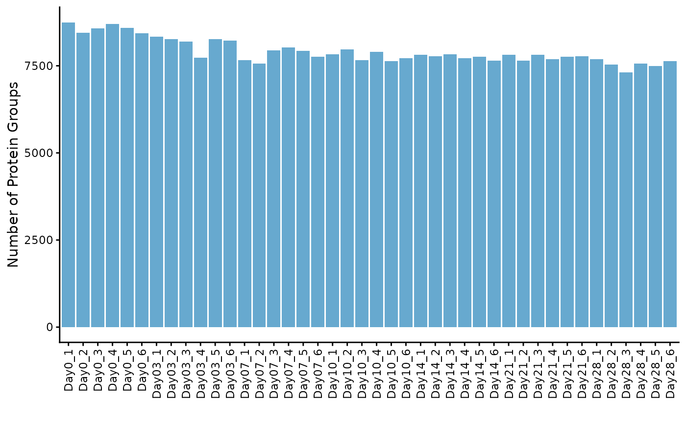
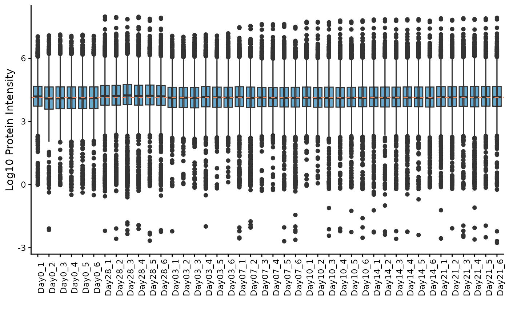
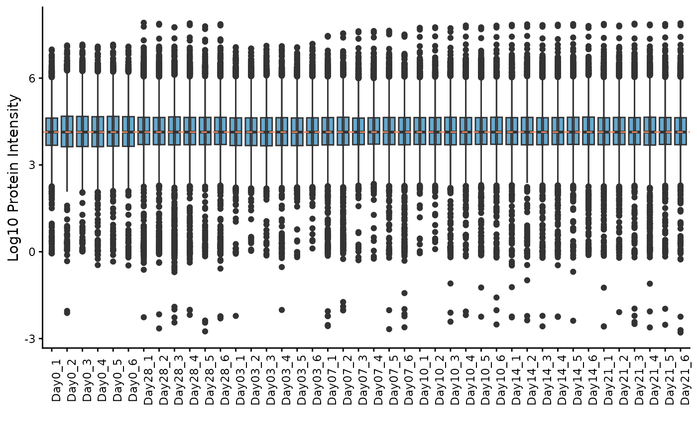
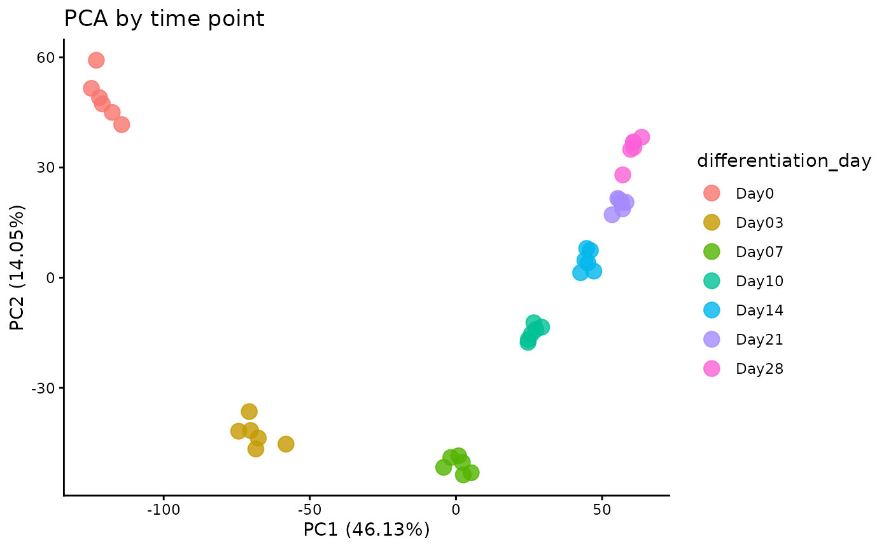
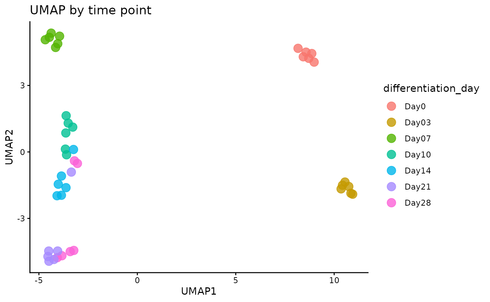
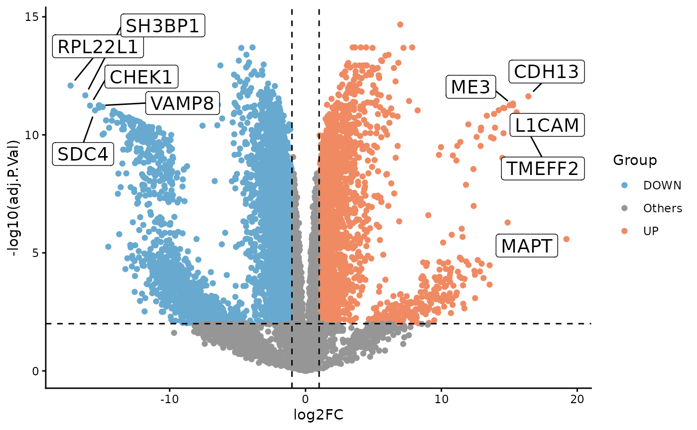
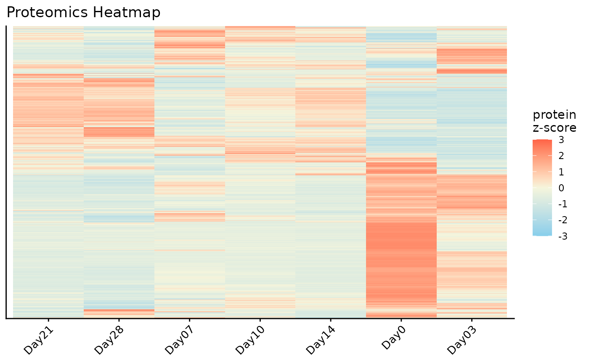
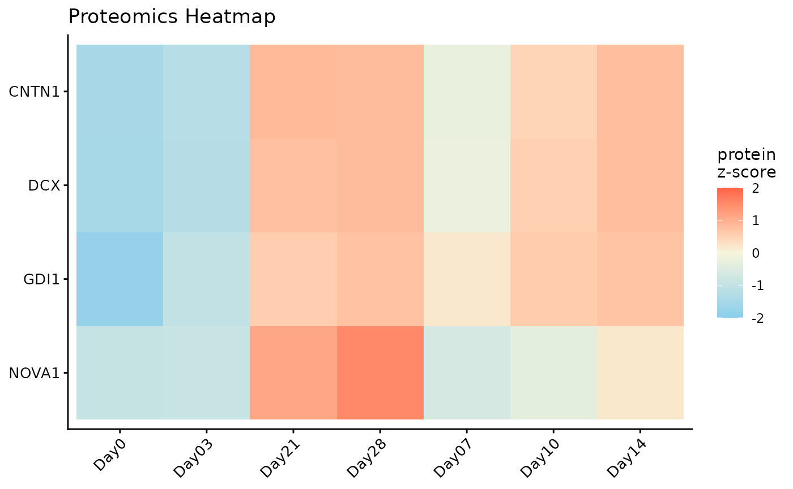

getting-started
getting-started.RmdIntroduction
The ProtPipe package provides downstream proteomics
workflows based on SummarizedExperiment. This vignette uses
a packaged example object so the analysis starts from a ready-to-use
dataset rather than reconstructing the object from raw files.
Setup and Data Loading
First, we load the ProtPipe package.
suppressPackageStartupMessages(library(ProtPipe))
library(SummarizedExperiment)
library(ggplot2) # For plot customizationLoad the packaged example object with data(). This
object was created from
EXAMPLES/basic_example_data/iPSC.csv without supplying
external sample metadata, so the only sample annotation present
initially is differentiation_day.
data("protpipe_example_se")
se <- protpipe_example_se
se
#> class: SummarizedExperiment
#> dim: 9119 42
#> metadata(2): creation_method processing_log
#> assays(1): intensities
#> rownames: NULL
#> rowData names(2): PG.ProteinGroups PG.Genes
#> colnames(42): Day0_1 Day0_2 ... Day21_5 Day21_6
#> colData names(1): differentiation_day
colData(se)
#> DataFrame with 42 rows and 1 column
#> differentiation_day
#> <character>
#> Day0_1 Day0
#> Day0_2 Day0
#> Day0_3 Day0
#> Day0_4 Day0
#> Day0_5 Day0
#> ... ...
#> Day21_2 Day21
#> Day21_3 Day21
#> Day21_4 Day21
#> Day21_5 Day21
#> Day21_6 Day21Initial Quality Control (QC)
Before normalization and analysis, we should assess the quality of our data.
Protein Counts and Intensity Distributions
We can check the number of proteins identified in each sample and visualize the intensity distributions with boxplots.
# Get the number of identified proteins per sample
ProtPipe::get_pg_counts(se)
#> Sample Protein_Groups
#> Day0_1 Day0_1 8746
#> Day0_2 Day0_2 8451
#> Day0_3 Day0_3 8571
#> Day0_4 Day0_4 8697
#> Day0_5 Day0_5 8592
#> Day0_6 Day0_6 8433
#> Day28_1 Day28_1 7686
#> Day28_2 Day28_2 7541
#> Day28_3 Day28_3 7305
#> Day28_4 Day28_4 7570
#> Day28_5 Day28_5 7500
#> Day28_6 Day28_6 7631
#> Day03_1 Day03_1 8334
#> Day03_2 Day03_2 8261
#> Day03_3 Day03_3 8193
#> Day03_4 Day03_4 7734
#> Day03_5 Day03_5 8259
#> Day03_6 Day03_6 8229
#> Day07_1 Day07_1 7660
#> Day07_2 Day07_2 7569
#> Day07_3 Day07_3 7939
#> Day07_4 Day07_4 8026
#> Day07_5 Day07_5 7935
#> Day07_6 Day07_6 7755
#> Day10_1 Day10_1 7835
#> Day10_2 Day10_2 7965
#> Day10_3 Day10_3 7663
#> Day10_4 Day10_4 7902
#> Day10_5 Day10_5 7629
#> Day10_6 Day10_6 7724
#> Day14_1 Day14_1 7813
#> Day14_2 Day14_2 7777
#> Day14_3 Day14_3 7827
#> Day14_4 Day14_4 7725
#> Day14_5 Day14_5 7756
#> Day14_6 Day14_6 7653
#> Day21_1 Day21_1 7810
#> Day21_2 Day21_2 7654
#> Day21_3 Day21_3 7815
#> Day21_4 Day21_4 7696
#> Day21_5 Day21_5 7765
#> Day21_6 Day21_6 7771
# Plot the counts for each sample
ProtPipe::plot_pg_counts(se)
# Plot the intensity distributions for each sample
ProtPipe::plot_pg_intensities(se)
These plots help us identify any samples that behave as strong outliers.Sample Correlation
Next, we can assess the reproducibility between replicates by plotting a correlation heatmap. Samples from the same condition should generally cluster together.
ProtPipe::plot_correlation_heatmap(se)
Data Pre-processing
ProtPipe includes functions for common pre-processing
steps like normalization and imputation.
Normalization
Here, we apply median normalization to align the intensity distributions across all samples.
se_normalized <- ProtPipe::median_normalize(se)
# We can re-plot the intensities to see the effect of normalization
ProtPipe::plot_pg_intensities(se_normalized)
Imputation
Missing values must be handled before many downstream analyses. We will use the “down-shifted normal” (Perseus-like) imputation method. As this is a stochastic method, we set a seed for reproducibility.
set.seed(123) # Set a seed for reproducible imputation
se_imputed <- ProtPipe::impute_left_dist(se_normalized)
# The object should no longer have missing values
any(is.na(assay(se_imputed)))
#> [1] FALSE
# Create a preprocessing report
report <- generate_preprocessing_report(se_imputed)Downstream Analysis and Visualization
With a clean, complete dataset, we can now explore the relationships between samples and proteins.
Principal Component Analysis (PCA)
PCA is a powerful tool for visualizing the primary sources of variation in the data and assessing sample clustering.
# The plot_pca function is a convenient wrapper that calculates and plots the results
ProtPipe::plot_PCs(se_imputed, condition = "differentiation_day") +
labs(title = "PCA by time point")
UMAP
Lets plot a UMAP.
# The plot_pca function is a convenient wrapper that calculates and plots the results
ProtPipe::plot_umap(se_imputed, condition = "differentiation_day", neighbors = 6) +
labs(title = "UMAP by time point")
Differential Expression
To illustrate a simple two-group comparison, we compare Day 28 and Day 0 directly with limma.
de <- ProtPipe::do_limma_binary(
se_imputed,
condition = "differentiation_day",
control_group = "Day0",
treatment_group = "Day28"
)
ProtPipe::plot_volcano(
de,
label_col = "PG.Genes"
)
Pathway Analysis
We can perform a simple Gene Ontology enrichment analysis on the differential expression results.
pathways <- ProtPipe::enrich_pathways(
de,
gene_col = "PG.Genes",
source = "go",
run_gsea = FALSE,
run_kegg = FALSE
)
pathways$plots$ora_up_dotplot
#> NULLProtein Expression Heatmap
Finally, we can visualize the expression patterns of the proteins across our samples using a heatmap. The data is automatically Z-scored by row to highlight relative expression changes.
# Plot a heatmap of all proteins with row and column clustering
ProtPipe::plot_proteomics_heatmap(
se_imputed,
protmeta_col = "PG.Genes",
condition = "differentiation_day",
cluster_rows = TRUE,
cluster_cols = TRUE
)
#> Condition provided. Summarizing replicates into means...
top_genes <- unique(stats::na.omit(de$PG.Genes))[1:4]
ProtPipe::plot_proteomics_heatmap(
se_imputed,
protmeta_col = "PG.Genes",
condition = "differentiation_day",
genes = top_genes,
cluster_rows = TRUE,
cluster_cols = TRUE
)
#> Condition provided. Summarizing replicates into means...
Conclusion
This vignette demonstrated a complete ProtPipe workflow starting from
a packaged SummarizedExperiment. The same pattern extends
to user-supplied objects constructed with create_se().